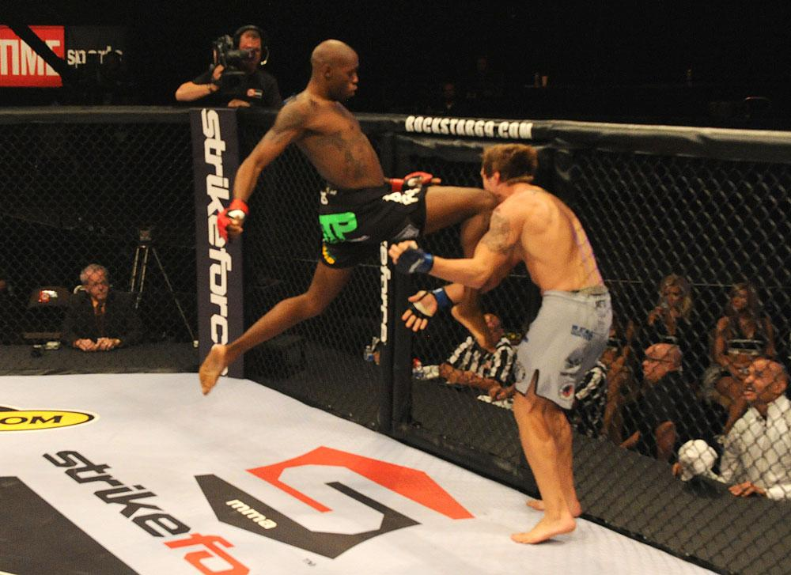

Style walki wręcz
Kliknij na zdjęcie w celu wyświetlenia informacji

Mixed martial arts MMA
- Zawodnicy sztuk i sportów walki walczą przy dużym zakresie dozwolonych technik, dopuszcza się wszystkie techniki dozwolone w innych sportach walki bez broni.
- Pierwszym udokumentowanym sportem walki przypominającym dzisiejsze MMA był pankration (stosuje się też spolszczoną pisownię „pankracjon”), w którym stosowano różne techniki z klasycznych greckich zapasów i pięściarstwa.
- Walki MMA pierwotnie określano ze względów marketingowych (zwłaszcza w USA) również jako „No Holds Barred” (NHB), czyli „bez chwytów zabronionych”.
- W typowych walkach MMA dozwolone są rzuty, ciosy pięściami, kopnięcia, dźwignie, duszenia. Zabronione są natomiast techniki stwarzające znaczne niebezpieczeństwo dla zdrowia zawodników.
